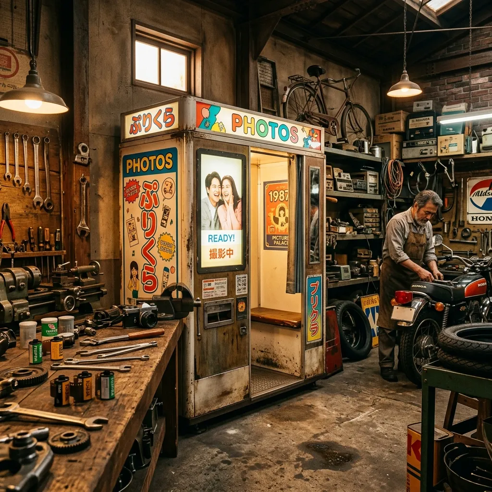

Contact the Workshop
Whether you are seeking to acquire a restored machine, require bespoke fabrication for an existing cabinet, or wish to arrange an educational visit to our Hull facility, our team is ready to assist.
Service Area & Logistics
While our restoration facility is firmly rooted in Hull, East Yorkshire, our operational reach extends entirely across the United Kingdom. We routinely manage the complex logistics of transporting these delicate, heavyweight machines to independent cinemas in central London, cultural venues in the Scottish Highlands, and coastal arcades across the south coast. The physical transportation is always handled by our dedicated, in-house technical team using custom-equipped vehicles, guaranteeing that the machine is never subjected to the rough handling associated with standard freight couriers.
Lead times are highly dependent upon the specific machine and your location. For units currently marked as 'Ready for Delivery' in our inventory, we generally schedule installation within fourteen working days of the final balance clearing. For machines undergoing our intensive Nine-Bench Revival Method, lead times extend significantly depending on the complexity of the required fabrication. We strongly encourage prospective buyers to contact us well in advance of their required launch date, allowing us to factor the intricate delivery logistics into our workshop schedule.
Check Availability
Consultation Process
Acquiring a piece of restored mechanical history is not a transactional process; it requires a detailed understanding between the workshop and the venue. Our consultation process ensures that every installation is practically viable and perfectly suited to your audience. The journey begins with a thorough initial enquiry, during which we discuss your venue's footfall, available space, access restrictions, and specific aesthetic requirements. We need to ascertain that the proposed location offers the stable climate necessary for chemical processing, free from direct sunlight and extreme temperature variations.
Following the initial discussion, we invite clients to inspect the intended machine, either in person at our Hull facility or via a detailed video consultation. This step is vital to demonstrate the mechanics and the daily maintenance required. Once you are entirely confident, a formal reservation agreement is drafted. As the machine progresses through final wet-testing, we maintain constant communication, providing photographic updates of the final calibration. The process concludes with our technicians arriving at your venue for the commissioning phase, spending the necessary hours levelling the cabinet and training your staff in its operation.
Send an EnquiryPricing Packages
Due to the highly individual nature of mechanical restoration, we provide transparent pricing tiers that reflect the level of intervention, exterior finish, and ongoing support required by the buyer. Exact figures vary based on the rarity of the base machine, but the following packages outline our structured approach.
Explorer Package
Designed for independent venues requiring a dependable, mechanically perfect machine without the cost of a full cosmetic strip-down. This package includes a complete mechanical rebuild, electrical safety upgrades, and optical calibration. The exterior cabinet is thoroughly cleaned and stabilised but retains all the visible patina, minor scuffs, and historical marks from its previous working life. Standard twelve-month mechanical warranty included.
Heritage Package
Our most requested tier. This comprehensive package includes the entirety of the mechanical overhaul alongside a complete cosmetic restoration of the cabinet. Steel panels are stripped and re-enamelled in original factory colours, damaged timber bases are entirely replaced with matching veneers, and all brass fixtures are meticulously polished. Includes the detailed maintenance logbook, staff training session upon installation, and twenty-four months of priority telephone support.
Museum Collection
Reserved for exceptionally rare models destined for exhibition or high-profile cultural venues. This package demands absolute historical accuracy. We fabricate replacement components strictly using period-correct materials and manufacturing techniques. The electrical safety upgrades are completely concealed to prevent any visual disruption to the original aesthetic. Includes an archival-quality bound book detailing the specific history and restoration journey of the individual machine.
Contact Details
Our workshop operates Monday through Friday, from 09:00 until 17:30. We endeavour to respond to all written enquiries within forty-eight hours.
Archive Arcade Workshop
Address: Unit 4, The Old Ropery, Hull, East Yorkshire, HU1 2AB
Telephone: 01482 555 0192
Email: workshop@archivearcade.co.uk
Send an Enquiry